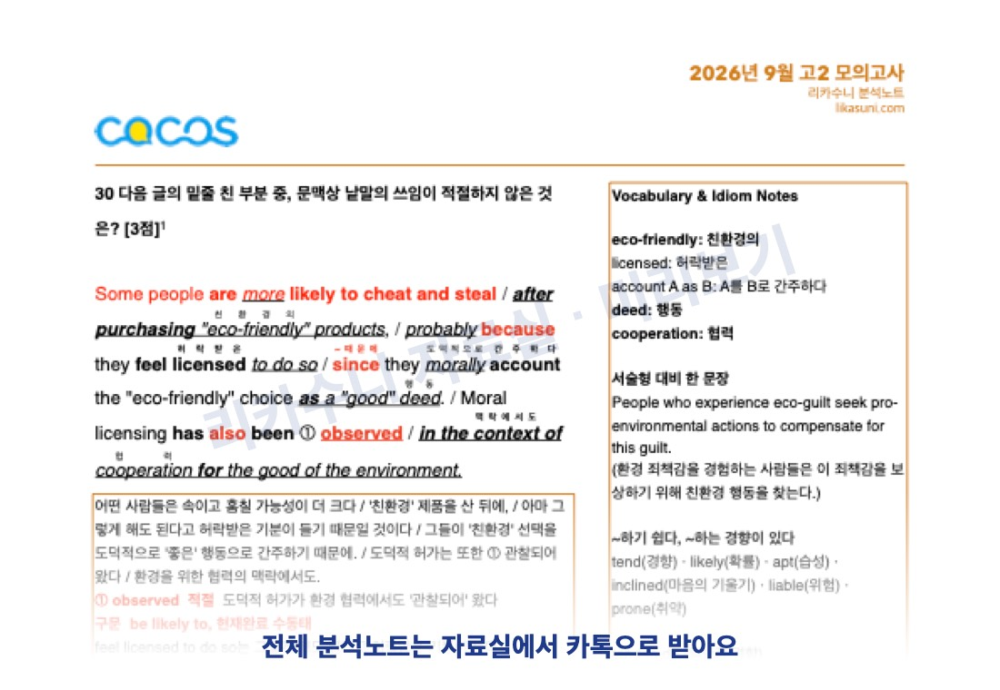

리카수니 분석노트 해설 · 이매동 코코스학원
2026 고2 9모 영어 30번 어휘 해설·분석이에요. (2026 9월 고2 영어 모의고사 30번 · 문맥상 낱말의 쓰임 · 3점 · 정답 ③ reluctant → inclined)
정답 근거, 오답 거르는 법, 구문(be likely to · 삽입절 they know · as ~ as possible · in the same way that), 어휘를 정리했고 분석노트 pdf 받는 곳은 글 아래에 있어요.
안녕하세요, 이매동 코코스학원 리카수니 원장입니다.
학생 요청으로 만든 분석노트를 바탕으로 정리했어요. 시험지를 옆에 펴 놓고 보시면 더 잘 보여요.
| 한눈에 보는 정답 · 시험: 2026년 9월 고2 전국연합학력평가 영어 · 번호: 30번 (밑줄 친 부분 중 문맥상 낱말의 쓰임이 적절하지 않은 것, 3점) · 정답: ③ reluctant → inclined (~하는 경향이 있는) |
'친환경' 제품을 사면 착한 일을 했다고 여겨 오히려 나쁜 행동을 허락받은 듯 느끼기도 하고(도덕적 허가), 반대로 환경에 해로운 일을 떠올리면 죄책감을 덜려고 친환경 행동을 찾는다는 글이에요.
흐름은 도덕적 허가 → 환경 죄책감(eco-guilt) → 균형을 빨리 되찾으려 임시방편을 믿는 경향 → 평가·태도 바꾸기, 청원 서명 예시예요.
| · 근거 1: 환경 죄책감을 느끼는 사람들은 죄책감을 보상하고 균형을 회복하려고 친환경 행동을 찾아요. · 근거 2: ③ 뒤 because 절에서 도덕적 균형을 다시 세우고 죄책감에서 '가능한 한 빠르고 쉽게' 벗어나고 싶어 한다고 이유를 대요. → 빨리 벗어나고 싶으니 임시방편(quick-fixes)을 믿기를 '꺼리는(reluctant)' 게 아니라 '믿으려는 경향이 있는(inclined)' 거예요. 정답 ③이에요. |
| · ① observed → 도덕적 허가가 환경 협력의 맥락에서도 '관찰되어' 왔다는 뜻이라 적절해요. · ② restore → 죄책감을 보상하고 균형을 '회복'한다는 뜻이라 적절해요. · ④ evaluation → 태도처럼 행동에 대한 '평가'도 바꾼다는 뜻이라 적절해요. · ⑤ more → 피해 증거를 보면 청원에 서명할 가능성이 '더 크다'는 뜻이라 적절해요. 낱말 쓰임 문제는 밑줄 바로 뒤 because·so 이유 문장과 방향이 맞는지 확인하세요. |

▲ 2026 고2 9모 영어 30번 어휘 해설·분석 pdf 분석노트 미리보기
| 1) be likely to do (~할 가능성이 크다) / feel licensed to do so (그렇게 해도 된다고 느끼다) → Some people are more likely to cheat and steal after purchasing "eco-friendly" products (2026년 9월 고2 30번) 2) 현재완료 수동태 has been observed / account A as B (A를 B로 간주하다) 3) be reminded of / 목적격 관계대명사 생략 + 삽입절 they know (deeds they have done that they know were harmful) 4) as quickly and easily as possible (가능한 한 빠르고 쉽게) 5) in the same way that ~ (~와 같은 방식으로) / 현재분사 후치 수식 addressing / after + 동명사 |
| 영어 | 뜻 |
|---|---|
| eco-friendly | 친환경의 |
| licensed | 허락받은 |
| account A as B | A를 B로 간주하다 |
| deed | 행동 |
| cooperation | 협력 |
| eco-guilt | 환경 죄책감 / guilt 죄책감 |
| compensate for | ~을 보상하다 |
| restore | 회복하다 |
| reluctant | 꺼리는 ↔ inclined ~하는 경향이 있는 |
| quick-fix | 임시방편 |
| inconsistency | 불일치 |
| evaluation | 평가 |
| burdening | 부담을 주는 |
| petition | 청원서 |
| address | (문제를) 다루다 |
| 서술형 대비 분석노트에 '서술형 대비 한 문장'(People who experience eco-guilt seek pro-environmental actions to compensate for this guilt.)과 영어 핵심 요약(Core Summary)을 정리했어요. '~하기 쉽다' 표현 비교(tend to · be likely to · be apt to · be inclined to · be liable to · be prone to)와 '다루다' 표현(deal with · handle · address · tackle · cover)도 함께 넣었어요. |
| 📂 2026 고2 9모 영어 분석노트 pdf 받는 법 끊어 읽기·해석·구문·어휘가 정리된 PDF 는 리카수니 자료실 회차 페이지에서 카카오 로그인 후 카톡으로 받을 수 있고, 다른 번호도 요청할 수 있어요. 전과목 문제지·정답 pdf 는 같은 페이지 위쪽 회차 메뉴에서 볼 수 있어요. ▶ 2026년 9월 고2 영어 모의고사 분석노트·변형문제 https://data.likasuni.com/moe/go2/2026-09/eng/ |
Q. 2026 고2 9모 영어 30번 어휘 해설·분석 정답은?
A. ③ reluctant → inclined (~하는 경향이 있는)
Q. 분석노트 pdf 는 어디서 받나요?
A. 리카수니 자료실(data.likasuni.com)에서 카카오 로그인 후 카톡으로 받을 수 있어요. 위 안내의 링크로 이동하세요.
이상 2026 고2 9모 영어 30번 어휘 해설·분석 pdf 정리였어요. 궁금한 점은 댓글로 남겨 주세요.
| 🏫 이매동 코코스학원 안내 분당 이매동 코코스학원은 초등·중등·고등 영어와 수학을 가르쳐요. 모의고사·수능특강·내신 대비가 궁금하시면 편하게 문의해 주세요. · 홈페이지: https://www.cocosedu.co.kr/ · 주소: 경기 성남시 분당구 판교로 476 2층 |
#2026고29모영어 #2026고29모영어분석 #고29모영어 #고29모30번 #2026년9월모의고사 #2026년9월고2영어 #9모영어어휘 #9모영어pdf #낱말의쓰임 #belikelyto #영어분석노트 #이매동영어학원 #코코스학원 #리카수니